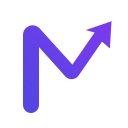

Tempo líquido hoje
00:00

Seu próximo passo, decidido por dados.
O sistema escolhe a próxima ação e ajusta a divisão por peso e aproveitamento. O timer identifica automaticamente quando um player está em reprodução.
Baseado no edital e na prova de referência cadastrados para o concurso; a ordem é recalibrada pelos resultados do TEC e pelo seu progresso nos vídeos. Não é necessário abrir roteiro ou PDF separado.
| Caderno | Área | Aproveitamento | Questões | Situação | Próxima ação |
|---|
O timer acompanha a reprodução dos players e pausa quando você troca de aba ou perde o foco.
Com a extensão local ativa, o sistema lê as estatísticas visíveis da sua sessão autenticada no TEC e recalibra o plano. Nenhuma senha ou arquivo é enviado ao Nexame.
Use somente se a integração automática estiver indisponível.